Using Python ftppretty and pathlib Libraries to upload a Nested Local Folder to an FTP Site

1 Motivation
I am not sure if you have ever had same experience as me when you trying to upload a highly hierarchical nested local folder to an remote ftp site. For any FTP client I used like FileZilla, NppFTP etc It can only upload 1 or multiple files in a folder to a folder in FTP site. If a folder is not in the FTP site, then you need to create such folder first and then upload all the files to the folder. If there is a subfolder under a folder, you will be not able upload the sub-folder since only files are allowed to be uploaded. Therefore, you will need to create the sub-folder first before uploading the files into it. If you have a very deep hierarchy of folder structure, this will be really frustrating.
For a website deployment, if you don’t have a deployment tool. Then you will have to rely on the ftp upload to update your site, you can imagine this will be very cumbersome. I encountered such issue since I started to use Quarto to build my new blog. As I’m deploying the blog into my own site, there is no available tool to do this. This made me to write this python utility to do such job.
2 Python comes to Rescue!
I am lazy and I like everything just need a click if it can. I used Python for file uploading to FTP site before but not nested folders. After a quick test, I found ftppretty library in conjunction with pathlib library are the best combination for me to quickly make this work.
I therefore wrote this function and I thought it may benefit to others if you have experienced same issue.
"""
Created by Steven Wang for website or nested directory uploading to an FTP site.
"""
from ftpretty import ftpretty
from pathlib import Path
import os
import timeit
from contextlib import contextmanager
## set context for time elapse display
@contextmanager
def timeused(msg):
start = timeit.default_timer()
try:
yield
finally:
end = timeit.default_timer()
time_elapse = round((end - start) / 60, 2)
print (f'{msg} The total upload time elapsed is: {time_elapse} minutes')
def upload_EntireDirectoryToFTPSite(Local_Directory, FTP_Site_Directory, FTP_Site, username, password, passive = True):
"""
Funcion name: upload_EntireDirectoryToFTPSite
usage: this function is used to upload a full local directory to a remote ftp site.
Args:
Local_Directory (str): the local file directory, like "c:/apps/mywebsite"
FTP_Site_Directory (str): the directory in ftp site, if it is root then "/", otherwise like "/myblog"
FTP_Site (str): ftp site hostname
username (str): your ftp user name
password (str): your ftp password
passive (bool, optional): change the FTP mode to either passvie or active. Defaults to True, which is passive.
"""
## change the working directory to the local directory which you want to upload to ftp site
path = Path(Local_Directory)
os.chdir(path)
with timeused(f'File Directory "{Local_Directory}" has fully uploaded to "{FTP_Site}" under directory {FTP_Site_Directory}.'):
# f = ftpretty("ftp.smartspreadsheet.com", "0102281|smartspread", "iasfatr061")
f = ftpretty(FTP_Site, username, password)
f.cd(FTP_Site_Directory)
remote_list = f.list()
for p in sorted(path.rglob('*')):
if p.is_dir():
p_remote = p.relative_to(path)
# print(p_remote.parts)
if len(p_remote.parts) == 1:
p_remote_list = remote_list
else:
parents = p_remote.parts[0:-1]
print(parents)
p_parents = path.joinpath(*parents).relative_to(path)
print(p_parents)
p_remote_list = [str(p_parents / l) for l in f.list(str(p_parents))]
# print(p_remote)
# print(p_remote_list)
if str(p_remote) not in p_remote_list:
f.mkdir(str(p_remote))
print(f"{p_remote} created in the remote ftp server.")
else:
print(f"{p_remote} is already in ftp site")
for fl in sorted(path.rglob('*')):
if fl.is_file():
f_remote = fl.relative_to(path)
# print(f_remote.parent)
if len(f_remote.parts) == 1:
f.cd(FTP_Site_Directory)
# print("yue")
else:
f_parent = Path(FTP_Site_Directory) / f_remote.parent
f.cd(str(f_parent))
f.put(fl.relative_to(path), str(fl.relative_to(path).name))
print(str(fl.relative_to(path)))
f.close()
if __name__ == "__main__":
## assign the parameter values
params = {"Local_Directory": "D:/porjects/quarto/msbicoe_blog/_site",
"FTP_Site_Directory": "/",
"FTP_Site": "ftp.smartspreadsheet.com",
"username": "0102281|smartspread",
"password": "iasfatr061"
}
upload_EntireDirectoryToFTPSite(**params)
3 Github Repo
You can get the code from the github repo if you need.